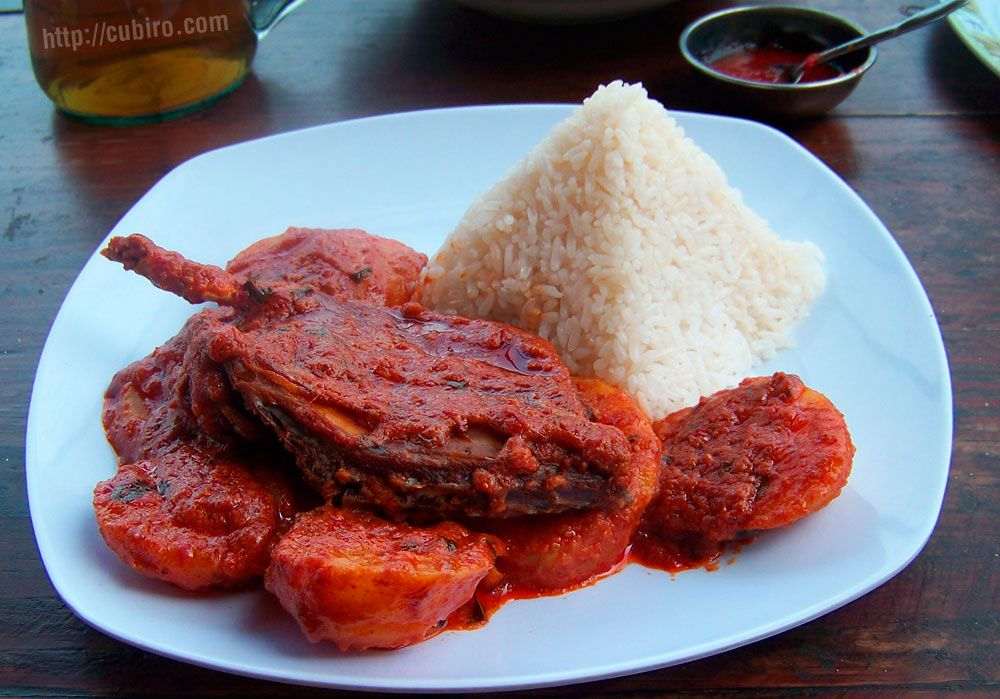

Receta de Picante de Cuy, un plato típico de la sierra peruana
16/04/2019, Trujillo 
Uno de los platos típicos que aún perduran en muchos pueblos de la sierra peruana es el Picante de Cuy, preparado desde tiempos pre incas a base de cuy, un pequeño roedor que también era utilizado como ofrenda para los dioses. En este post te contamos algo de su historia, además la receta, ingredientes y consejos para que sepas cómo se prepara de una manera muy fácil. Es un plato especial para ocasiones importantes como en Fiestas Patrias, Año Nuevo, Navidad, aniversarios, cumpleaños o simplemente para tu almuerzo con el delicioso toque de peruanidad.
Toma nota de esta receta especial que puedes preparar para esa ocasión especial de celebración ya sea en el Perú o si vives en el extranjero, para preservar las costumbres peruanas aún estando lejos del terruño que te vio nacer.
Ingredientes:
- 2 Cuyes grandes
- Higado y corazón del cuy
- 5 Cebollitas chinas
- 2 Cucharadas de aji panca molido
- 2 Cucharadas de aji mirasol molido
- 1 Cucharadita de ajos molidos
- 8 Papas amarillas cocidas
- 1 Cucharada sopera de maní
- Aceite
- Sal pimienta y comino
Preparación:
En una sartén echar aceite y una vez caliente freír los ajos con los ajíes, sazonar con sal, pimienta y comino.
Una vez dorado, añadir la parte blanca picada de la cebolla china. Mover y después agregar la parte verde picada de la cebolla china.
Mientras, en otra sartén tostar el hígado y corazón de cuy con el maní, luego licuarlo y agregar al picante.
Colocar los cuyes cortados en mitades y previamente fritos en aceite bien caliente.
Cocinar por diez minutos y dejarlo reposar algunos minutos antes de servir. Se sirve acompañado de arroz o con papas.
¡Disfrútenlo!